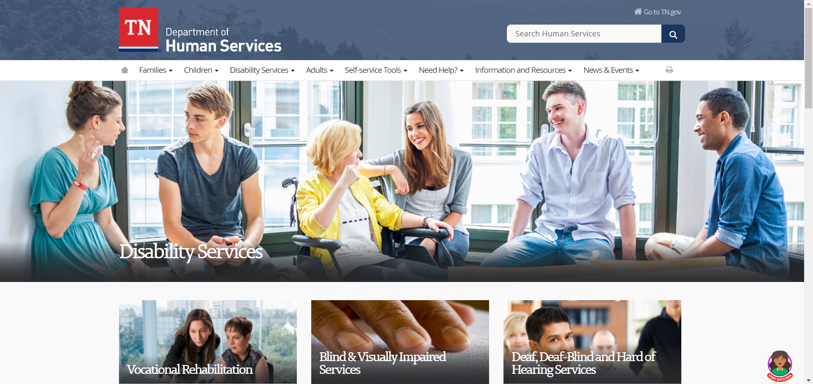
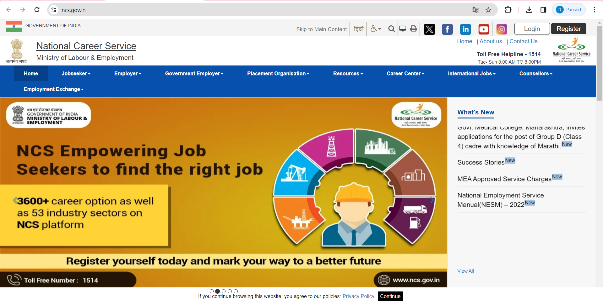

Location: Various districts in Tamil Nadu
Usage: Register with the employment exchange to access job listings, skill development programs, and career counseling services.
Benefits: Job opportunities in government and private sectors, reserved quota for disabled individuals, vocational training programs.
Link: https://tnvelaivaaippu.gov.in/
Location: Chennai, Tamil Nadu
Usage: Seek assistance from the rehabilitation council for vocational training, job placement, and support services for disabled individuals.
Benefits: Skill development programs, job placement assistance, counseling services, advocacy for disability rights.
Link: http://www.tnsrc.nic.in/
Location: Online platform accessible nationwide
Usage: Explore job listings, career guidance, skill development courses, and employment-related services provided by the Government of India.
Benefits: Access to a wide range of job opportunities, skill development courses, counseling services, and online job fairs.
Link: https://www.ncs.gov.in/
